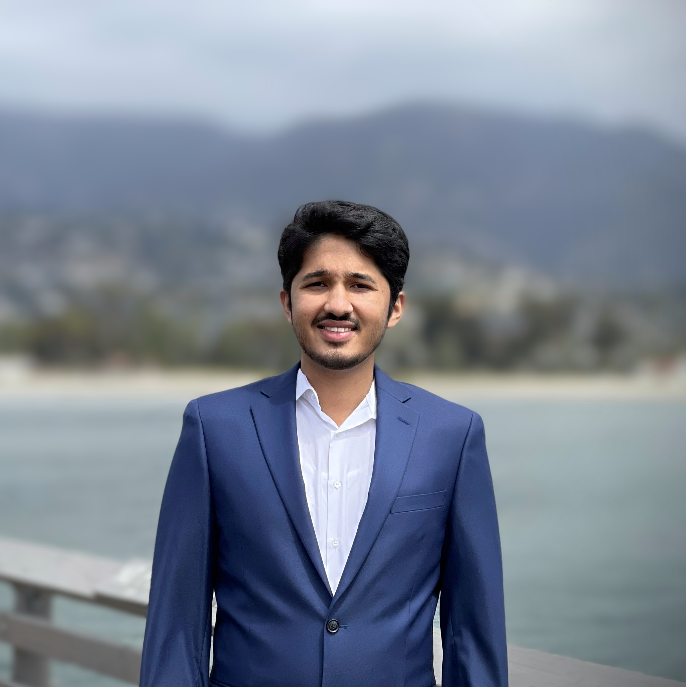
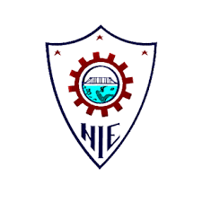

Autonomous Systems • Robotics • Edge AI
Pioneering the future of autonomous systems through cutting-edge computer vision, robotics, and AI technologies. 7+ years of experience in deploying production-ready AI solutions for healthcare robotics and autonomous navigation.
Advanced robotics navigation, SLAM algorithms, and autonomous mobile robot development
Deep learning models for object detection, pose estimation, and real-time video processing
Sensor fusion, control systems, and simulation for autonomous vehicle development
Edge computing, real-time AI processing, and IoT device integration
LLMs, reinforcement learning, and neural network optimization for embedded systems
Low-latency processing, motor control, and real-time embedded system development
Key Courses: Big Data Analytics and Visualization, Information Systems, Front-end Web Development, Back-end Web Development
Key Courses: Vehicle Dynamics & Control, Multivariable Controls, Modelling & Control of Robots, Computer Vision & Pattern Recognition, Robot Learning, Optimal Control & Reinforcement Learning, Linear Systems Theory

Key Courses: Robotics, C++ and Data Structures, Control Systems, Operating Systems, Computer Vision & Image Processing
Multi-modal AI system combining vision, SLM/LLM, and voice for automated patient rounding. Achieved 90% accuracy in vital sign extraction using edge AI processing.
Autonomous mobile robot navigation system achieving 3rd place globally in both simulation and real-world rounds. Advanced path planning and obstacle avoidance.
Edge AI application for patient fall prevention with real-time video processing. Deployed in hospitals with 40% reduction in false alarms.
Autonomous person tracking system using TensorFlow Lite and depth sensors. Maintains 1.2m following distance with 95% accuracy.
OCR-based nutritional assistant with real-time personalized advice. Winner of "Most Innovative and Market Ready Hack" at company hackathon.
Advanced auto-navigation systems with efficient localization and dynamic path planning. Active contributor to open-source robotics community.
Standard P3493.1 - Secure, Compliant, Coordinated, and Inclusive Healthcare Data Recycling
LeadershipAmerican Telemedicine Association (ATA) Nexus'24 and Nexus 2025
JudgeEvaluating innovative telehealth solutions and technologies
JudgeAISSS-2023, IPMV'24, BMVC-2024, BMVC-2025, RSS-2024, IJCNN2025, ICMI-2025
AcademicWIJAR, BMJ AI and Healthcare
AcademicMinistry of Education, Govt. of India (Aug 2013 – Aug 2017) - 4-year scholarship for academic excellence
ScholarshipAutonomous Mobile Robot Navigation Challenge - Both Simulation and Real-world rounds
Global Competition"Most Innovative and Market Ready Hack" - AI Nutritionist (July '23)
Hackathon WinnerCompany-wide technology hackathon (July '24)
HackathonRobert Bosch Internal Conference, Germany (Apr 2018)
SpeakerExcellence in project performance (May 2018, Nov 2018)
Corporate AwardInterested in collaborating on cutting-edge AI and robotics projects? I'm always open to discussing new opportunities, research collaborations, or consulting engagements in autonomous systems and computer vision.